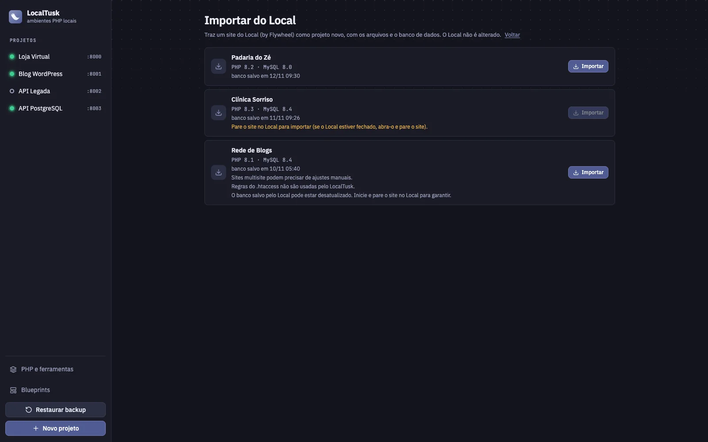

Inspetor e cliente de API
Veja cada requisição que chega ao seu PHP, com cabeçalhos, corpo, status e tempo. Reenvie, copie como cURL ou monte requisições no cliente de API integrado e guarde-as em uma coleção.

macOS e Linux Gratuito e open source, sob licença MIT
O LocalTusk monta cada projeto com Caddy, PHP-FPM, MySQL ou PostgreSQL e Redis nativos, sem Docker e sem configuração. Escolha as versões, clique em iniciar e abra o site em projeto.localhost.
Para macOS (Apple Silicon e Intel), Linux (x86_64 e ARM64) e Windows (x64).

Em vez de juntar servidor, banco, caixa de e-mail e ferramentas soltas, você tem tudo configurado por projeto e pronto para usar.
Veja cada requisição que chega ao seu PHP, com cabeçalhos, corpo, status e tempo. Reenvie, copie como cURL ou monte requisições no cliente de API integrado e guarde-as em uma coleção.
Instale as versões que precisar pelo app e escolha uma para cada projeto. Cada projeto tem a sua porta, o seu banco e os seus dados.
Veja quem chama quem. O app lê os arquivos PHP do projeto, segue os require e include e as classes ligadas por use, new e extends, e desenha tudo num grafo. Arquivos que nenhum outro usa aparecem como possíveis órfãos, e dá para clicar em qualquer um e ver o que ele chama e quem o chama.

Administre o MySQL ou o PostgreSQL pelo navegador, com login automático. Sem decorar usuário e senha de cada projeto.
Tudo que o PHP enviar com mail() ou SMTP cai na caixa do projeto, sem sair da sua máquina.
Baixa o WordPress, cria o wp-config.php com o banco do projeto e deixa o site pronto para usar. O WP-CLI é integrado.
Usa o Local (LocalWP)? Em Novo projeto → Importar do Local, o app lista os sites que estão no seu computador e traz o escolhido para cá: copia os arquivos, importa o banco, troca as URLs e os caminhos antigos pelos do projeto novo. As pastas do Local não são tocadas — ele só lê e copia. Se faltar a versão de PHP ou MySQL do site, o app oferece instalar ou usar a mais próxima.
Com a opção ligada, o botão do wp-admin já entra logado, sem digitar senha. O app gera um código de uso único que vale por 60 segundos (só o hash dele fica gravado no banco) e que só serve para administradores. Dá para escolher qual administrador usar e desligar quando quiser — ao desligar, o plugin de login é removido do site.
Abre um terminal na pasta do projeto onde php, wp, mysql ou psql e redis-cli já usam as versões e o banco daquele projeto.
Guarde os arquivos e o banco num único arquivo e restaure quando quiser. Antes de restaurar, o app guarda um backup de segurança do estado atual.
Salve um projeto pronto (arquivos, banco e versões) como modelo e crie novos já configurados. Dá para compartilhar o blueprint como arquivo.
Escolha MySQL ou PostgreSQL ao criar o projeto. As variáveis DB_*, o Adminer Neo, o backup e o psql do terminal funcionam como no MySQL, e o PHP já vem com pdo_pgsql.
Ligue o Redis em cada projeto com um interruptor. O app usa o Valkey, compatível com o Redis, e passa REDIS_HOST, REDIS_PORT e REDIS_URL ao PHP. Ele escuta só no seu computador.
Ligue o HTTPS no projeto e o app cria um certificado local e pede, uma vez, a sua autorização para o sistema confiar nele (no macOS; no Linux o app mostra onde está o certificado para você instalar). O site abre em https://projeto.localhost, com cadeado.
Abra o site no celular ou em outro computador da mesma rede, por endereço IP ou pelo nome .local. Só o site fica aberto: banco, Adminer Neo e Mailpit continuam só no seu computador.
Nada de pilha única e compartilhada. Ao iniciar um projeto, o LocalTusk sobe só os processos dele.
Dê um nome, escolha as versões do PHP e do banco (MySQL ou PostgreSQL) e, se quiser, comece de um blueprint ou de um backup.
O app baixa o que faltar e sobe o Caddy, o PHP-FPM e o banco (e o Redis, se ligado) do projeto, cada um na sua porta.
Seu site fica em projeto.localhost, com Adminer Neo, Mailpit e logs a um clique.
Telas reais do app. Sem mockups de fantasia.
Versões, porta, dados do banco e atalhos de um projeto, tudo na mesma tela.
O inspetor registra as chamadas que chegam ao projeto, e o cliente de API permite reenviá-las.

O app baixa e atualiza as ferramentas. Você instala só o que usa.

Modelos prontos para criar novos projetos em segundos.

A lista mostra quais arquivos ninguém usa e o que cada um chama. O grafo desenha as mesmas ligações.

Quem vem do Local (LocalWP) traz os sites com arquivos, banco e URLs ajustadas. As pastas do Local não são alteradas.
Existem ótimas ferramentas nesse espaço. Esta tabela mostra, sem exagero, onde cada uma faz mais sentido.
| Recurso | Laravel Herd | ServBay | FlyEnv | Laragon | XAMPP | |
|---|---|---|---|---|---|---|
| Foco | PHP em geral e WordPress | Laravel e PHP | PHP, Node, Python e outras linguagens | Vários runtimes, bancos e servidores web | PHP, Node e bancos no Windows | Pilha clássica: Apache, MariaDB, PHP e Perl |
| Plataformas | macOS, Linux (beta) e Windows (beta) | macOS e Windows | macOS e Windows | Windows, macOS e Linux | Windows | Windows, macOS e Linux |
| Preço | Grátis, sem limite de projetos | Grátis; Pro a US$ 99 por ano | Grátis com até 5 sites; Pro pago (US$ 9,90 por mês no plano mensal) | Grátis | Grátis para uso não comercial, com aviso de licença; comercial a partir de US$ 49 por ano | Grátis |
| Banco e e-mail de teste | MySQL, PostgreSQL, Redis (Valkey) e Mailpit incluídos, também no uso grátis | MySQL, PostgreSQL, Redis e Mail ficam no plano Pro | Vários bancos incluídos (MySQL, PostgreSQL, MongoDB, Redis), além de Adminer e phpMyAdmin | Bancos e servidores incluídos | MySQL, com backups automáticos | MariaDB incluído |
| Código aberto | Sim, licença MIT | Não informado | Não informado | Sim, BSD-3-Clause | Não informado | Sim, segundo o site oficial |
Informações das páginas oficiais, consultadas em 12/11/2026. Planos e preços mudam, então confira antes de decidir. "Não informado" quer dizer que não encontrei a informação nas páginas consultadas, não que a resposta seja não. Fontes: Laravel Herd, ServBay, FlyEnv, Laragon, XAMPP.
Quer um app gratuito e aberto que junte MySQL ou PostgreSQL, Redis, e-mail de teste, inspetor de API, backups e blueprints, e usa macOS ou Linux.
Faz mais sentido se o seu foco é Laravel e você quer a integração oficial. Bancos e e-mail ficam no plano pago.
É voltado só ao WordPress. Faz mais sentido se o seu trabalho é todo em WordPress e você quer um app dedicado a isso.
Atendem melhor quem precisa de várias linguagens além do PHP.
require com variável, então um arquivo carregado assim pode aparecer como órfão por engano. Use o resultado como pista, não como ordem para apagar.Use, estude, modifique e distribua. Sem conta, sem licença para ativar e sem limite de projetos.

O LocalTusk é gratuito e mantido por uma pessoa só. Se ele economiza o seu tempo, você pode ajudar a mantê-lo com uma doação por Pix, pelo LivePix: aponte a câmera para o QR code ou use o botão. Nada fica bloqueado para quem não doa.
Apoiar pelo LivePix.AppImage, .deb e .rpm para x86_64 e ARM64, e a pilha completa (PHP, MySQL, PostgreSQL, Redis, Caddy, terminal e backups) passou nos nossos testes no Ubuntu 24.04 (ARM64). No Windows, também beta: instalador .exe (x64) e a mesma pilha validada em testes automáticos; o Redis usa o build comunitário do projeto redis-windows. O macOS segue sendo o sistema principal.require, include e classes ligadas por use, new e extends. O que é chamado por variável, hook ou rota não aparece, então trate os órfãos como pistas.~/LocalTusk do seu computador: projetos, bancos, backups e blueprints. Para remover tudo, apague o app e essa pasta.Baixe o LocalTusk, crie o primeiro projeto e abra o site no navegador.